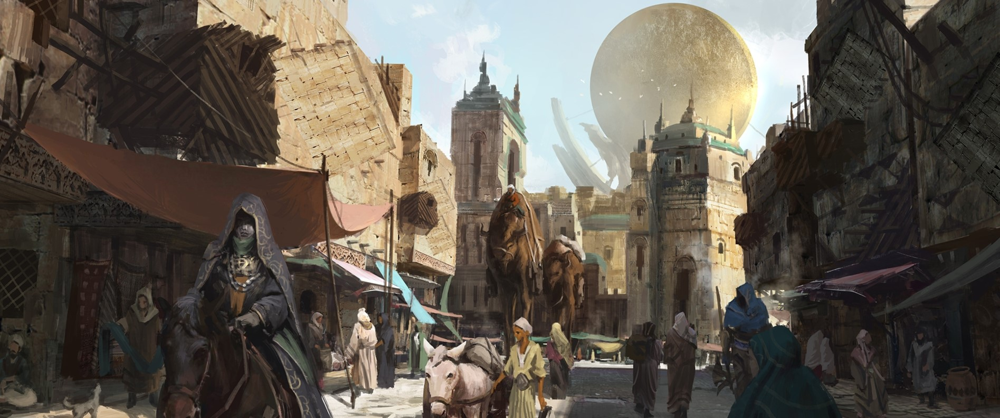

The Golden City of Shurima
The empire of Shurima was once a thriving civilization that spanned an entire continent. Forged in a bygone age by the mighty god-warriors of the Ascended Host, it united all the disparate peoples of the south, and enforced a lasting peace between them. Few dared to rebel. Those that did, like the accursed nation of Icathia, were crushed without mercy. However, after several thousand years of growth and prosperity, the failed Ascension of Shurima’s last emperor left the capital in ruins, and tales of the empire’s former glory became little more than myth. Now, most of the nomadic inhabitants of Shurima’s deserts eke out a meager existence from the unforgiving land. Some have built small outposts to defend the few oases, while others delve into long lost catacombs in search of the untold riches that must surely lay buried there. There are also those who live as mercenaries, taking coin for their service before disappearing back into the lawless wastelands. Still, a handful dare to dream of a return to the old ways. Indeed, more recently the tribes have been stirred by whispers from the heart of the desert—that their emperor Azir has returned, to lead them into a new, wondrous age.


A strong, lawful kingdom with a prestigious military history, Demacia’s people have always valued the ideals of justice, honor, and duty most highly, and are fiercely proud of their cultural heritage. But in spite of these lofty principles, this largely self-sufficient nation has grown more insular and isolationist in recent centuries. Now, Demacia is a kingdom in turmoil. The capital, the Great City of Demacia, was founded as a refuge from sorcery after the nightmare of the Rune Wars, and built upon the riddle of petricite—a peculiar white stone that dampens magical energy. It is from here that the royal family has long seen to the defense of the outlying towns and villages, farmland, forests, and mountains rich with mineral resources. However, following the sudden death of King Jarvan III, the other noble families have not yet approved the succession of his sole heir, young Prince Jarvan, to the throne. Those who dwell beyond the heavily guarded borders are increasingly viewed with suspicion, and many former allies have begun to look elsewhere for protection, in these uncertain times. Some dare to whisper that the golden age of Demacia has passed, and unless its people are willing to adapt to a changing world—something many believe they are simply incapable of doing—the kingdom’s decline may be inevitable. And all the petricite in the land will not protect Demacia from itself.
Piltover is a thriving, progressive city whose power and influence is on the rise. It is Valoran’s cultural center, where art, craftsmanship, trade and innovation walk hand in hand. Its power comes not through military might, but the engines of commerce and forward thinking. Situated on the cliffs above the district of Zaun and overlooking the ocean, fleets of ships pass through its titanic sea-gates, bringing goods from all over the world. The wealth this generates has given rise to an unprecedented boom in the city’s growth. Piltover has - and still is - reinventing itself as a city where fortunes can be made and dreams can be lived. Burgeoning merchant clans fund development in the most incredible endeavors: grand artistic follies, esoteric hextech research, and architectural monuments to their power. With ever more inventors delving into the emergent lore of hextech, Piltover has become a lodestone for the most skilled craftsmen the world over.